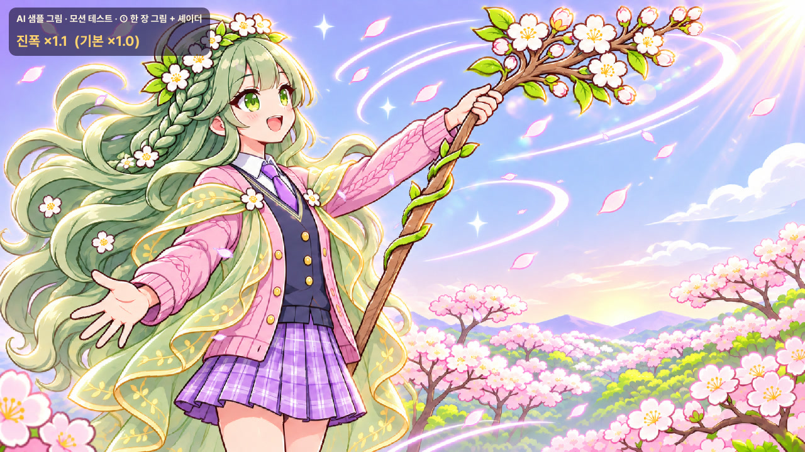
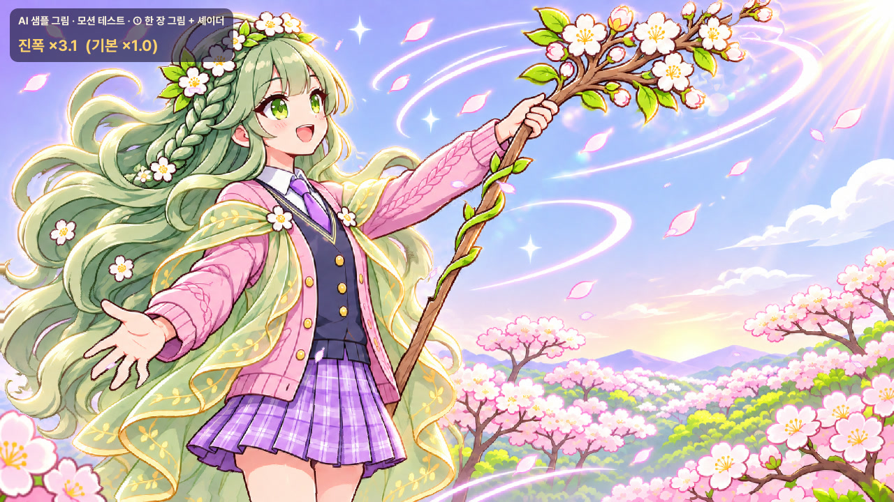
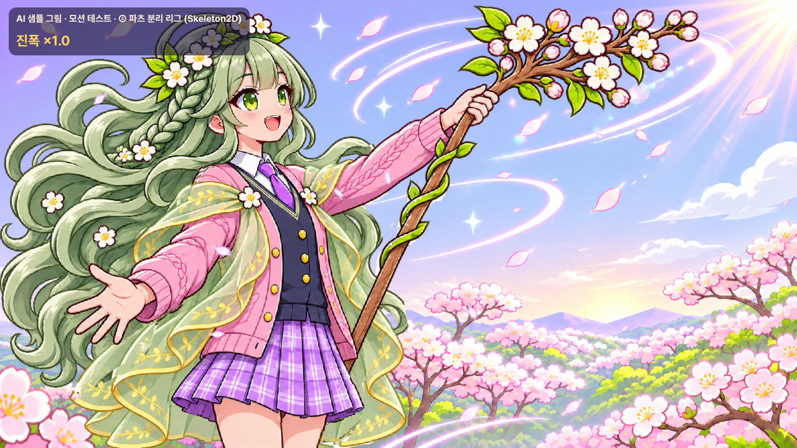
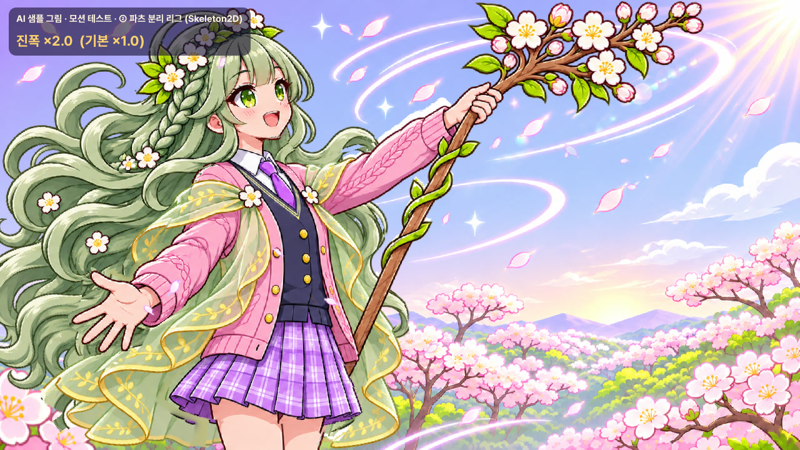
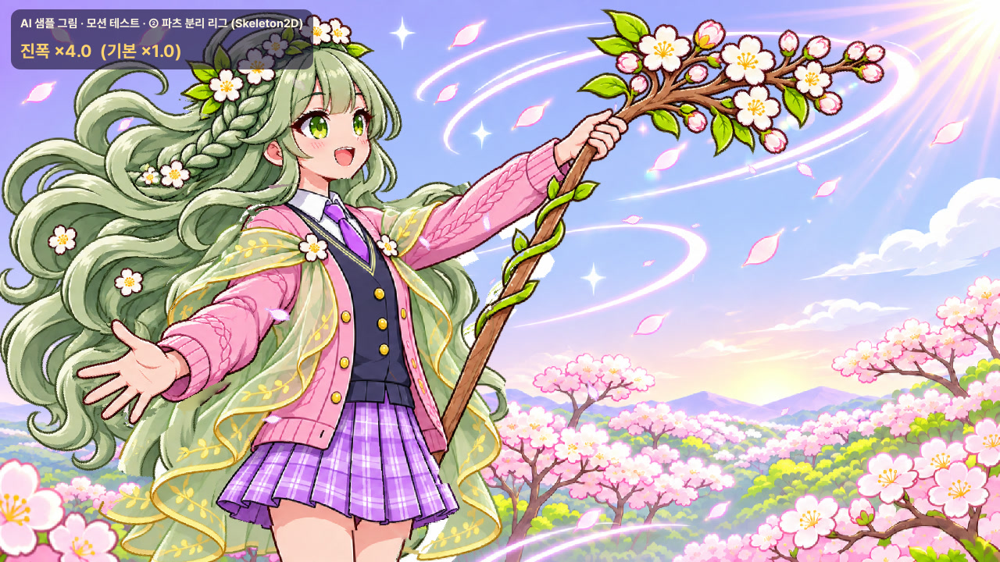

실제 픽업 화면 · 나란히 지금(정지) · ① · ②
소환 탭의 플로라 픽업 화면에서 그림 칸만 새 그림으로 바꿔 찍었습니다. 페이지 효과(꽃잎 · 빛)는 게임 그대로입니다. 세 칸은 같은 7초 주기라 을 누르면 같은 순간끼리 맞춰 볼 수 있습니다. 시각을 정확히 맞춘 한 장짜리 영상: pick_side mp4
크게 · 바꿔 보기 같은 순간에서 방법만 바꿈
재생 중에 버튼을 누르면 같은 시각에서 다른 방법으로 넘어갑니다. 차이를 가장 잘 보는 방법입니다.
그림만 (UI 없음) · 나란히
화면을 그림으로 덮어 놓고 UI 없이 찍었습니다. 움직임 자체를 보기 좋습니다. · 한 장짜리: solo_side mp4
찢어지는 한계 일부러 세게 · 1280
위 영상들은 아무것도 찢어지지 않는 세기(×1)입니다. 아래는 같은 움직임을 16초 동안 점점 키운 영상으로, 어디서부터 깨지는지 보여 줍니다(왼쪽 위에 지금 배율 표시). 정지 컷은 각 배율 순간입니다.





왼쪽 위 어두운 반투명 칸은 녹화용 이름표입니다(정수리 화관 위 어두운 부분은 그림이 아니라 이 칸).
어떻게 만들었나


성능 · 메모리 측정: RTX 4060 Ti 데스크톱 · gl_compatibility(OpenGL 3.3) · 화면 동기 끔 · 8초 평균
그림만 무대 — 한 겹, 그리고 같은 그림 + 방법을 8겹 쌓아 한 겹 비용을 드러낸 값(8겹 − 1겹)/7.
| 1280 · GPU / CPU / 프레임 (ms) | 1600 · GPU / CPU / 프레임 (ms) | 그리기 횟수 | 한 겹 늘 때 GPU / CPU (1280 · 1600) | |
|---|---|---|---|---|
| 지금 | 0.070 / 0.087 / 0.30 | 0.068 / 0.084 / 0.26 | 4 | 0.017 / 0.000 · 0.023 / 0.001 |
| ① | 0.071 / 0.105 / 0.36 | 0.071 / 0.100 / 0.33 | 6 | 0.016 / 0.012 · 0.023 / 0.021 |
| ② | 0.272 / 0.188 / 0.47 | 0.246 / 0.231 / 0.54 | 17–18 | 0.213 / 0.098 · 0.218 / 0.164 |
실제 픽업 화면 — 게임 전체가 올라간 상태(HDR 2D · 발광 · 페이지 효과 포함).
| 1280 · 프레임 / GPU (ms) · 그리기 | 1600 · 프레임 / GPU (ms) · 그리기 | |
|---|---|---|
| 지금 | 5.51 / 1.71 · 512 | 5.45 / 1.57 · 501 |
| ① | 6.35 / 2.09 · 536 | 4.96 / 1.42 · 494 |
| ② | 6.41 / 2.61 · 537 | 6.22 / 2.19 · 535 |
- ①은 페이지 자체의 측정 흔들림(±0.5 ms) 안입니다(1600에서는 오히려 정지보다 낮게 나옴). 화면 한 장을 그리면서 마스크 · 깜박임 텍스처를 더 읽는 정도라, 무대에서도 정지와 GPU 차이가 없습니다.
- ②는 일관되게 더 듭니다: 무대 한 겹 GPU +0.2 ms · CPU +0.1–0.16 ms(뼈 27개 갱신), 픽업 화면 GPU +0.6–0.9 ms, 무대 그리기 +13–14회. 칠하는 넓이도 배경판 1장 + 파츠 0.69장 = 정지의 약 1.7배입니다.
- 모바일 실기는 재지 않았습니다(빌드는 이번 범위 밖). 상대 비용으로 보면 ①은 어느 기기에서도 정지와 거의 같고, ②는 픽업 화면에 한 명 띄우는 정도는 무리가 없어 보이지만 저사양 안드로이드에서 실기 확인이 필요합니다. 전투 화면이나 여러 명을 한꺼번에 띄우는 곳에는 ②를 권하지 않습니다.
텍스처 메모리 (한 명 · 무손실 · 밉맵 포함)
| 구성 | 메모리 | 내려받는 크기(PNG) · 63명 | |
|---|---|---|---|
| 지금 | 그림 1672×941 1장 | 6.0 MB | — |
| ① | 그림 6.0 + 마스크 2장(836×471) 3.0 + 깜박임 0.16 | 9.2 MB (+3.2) | +0.24 MB/명 · +15 MB |
| ② | 배경판 6.0 + 파츠 12장 12.2 + 깜박임 0.16 | 18.3 MB (+12.3) | +4.2 MB/명 · +265 MB |
꽃잎(0.14 MB)은 모두가 함께 씁니다. ②의 +12.3 MB는 실행 중 렌더러 집계(무대 정지 23.6 → ② 35.9 MB)와 계산값이 맞습니다. 프로젝트에 켜진 VRAM 압축(ETC2/ASTC)을 그림에 쓰면 대략 ¼로 줄지만 그림 화질 확인이 필요합니다. ② 내려받는 크기는 원본 그림을 다른 화면용으로 함께 둘 때 기준이고, 뒷머리 파츠(961×918, 4.5 MB)가 가장 큽니다.
캐릭터당 비용 63명 기준 · 사람 작업 시간 추정
| 한 명 | 63명 | 무엇에 드나 | |
|---|---|---|---|
| ① | 약 2.5–4시간 | 약 160–250시간 (한 사람 5–6주) | 움직임 마스크 칠하기 1–2h · 감은 눈 판(AI 고침 + 맞춤 + 손질) 0.5–1h · 축 · 세기 맞춤과 한계 확인 0.5–1h. 셰이더 · 꽃잎 · 빛 띠는 공용이라 추가 없음. 배경 없는 컷(실루엣)이 있어야 빛 띠가 인물에만 걸립니다. |
| ② | 약 9–16시간 | 약 570–1,000시간 (한 사람 3.5–6개월) | 파츠 나누기 2–3h · 가려진 곳 채우기(뒷머리 AI 채움 + 손질, 배경판) 3–5h · 뼈 · 무게 2–4h · 움직임 맞춤 1–2h · 깜박임 0.5–1h · 1280/1600 이음매 확인 1h. 캐릭터마다 자세가 달라 파츠 칸 · 뼈 자리는 다시 잡아야 합니다(만드는 스크립트는 다시 씀). |
| ②' | 약 5–8시간 | 약 320–500시간 | 원화가가 처음부터 파츠별 레이어(가려진 곳까지 그린 PSD)로 넘겨줄 때. 나누기 · 채우기가 거의 사라지는 대신 그림 한 장 그리는 비용이 늘어납니다. |
이번 플로라 한 명은 위 단계를 모두 실제로 거쳤고, 시간은 같은 일을 사람이 도구로 할 때의 추정입니다. AI 이미지 비용은 한 명당 고침 몇 번(감은 눈 2 · 뒷머리 1 · 배경판 1 + 다시 뽑기) 수준입니다.
판정
①한 장 그림 + 셰이더
- 원본 그림 픽셀을 그대로 써서 그림체 손상과 이음매가 없고, 깜박임도 자연스럽습니다. 정지보다 확실히 「살아 있는」 화면입니다.
- 다만 움직임이 「그림이 바람에 일렁이는」 수준입니다. 고개 기울임 · 팔 움직임 같은 연기는 못 하고, 세게 하면 지팡이 · 손가락처럼 딱딱한 것부터 휩니다(×3).
- 가장 싸고 가볍습니다. 63명 전체의 기본으로 권합니다.
②파츠 분리 리그 (Godot 내장)
- 고개 기울임, 땋은 머리가 늦게 따라오는 움직임, 숄 · 치마 · 꽃가지가 따로 흔들려 ①보다 생동감이 분명히 큽니다. 인물과 배경이 나뉘어 깊이감도 생깁니다.
- ×1에서는 이음매가 안 보이지만 ×2 무렵부터 어깨 · 팔 사이 틈이 보여 여유가 작고, 가려진 곳(뒷머리 · 배경판)은 AI 채움이라 손질이 필요합니다. 비용은 ①의 약 4배, 메모리는 3배입니다.
- Godot의 Polygon2D 무게 편집은 손으로 하기 어려워 이번에는 스크립트로 만들었습니다. 신화 · SS 픽업 몇 명에만 쓰고, 그 이상이면 Spine이 낫습니다.
Spine · Live2D가 ②에 더해 주는 것
- Spine Professional(1인 $379 한 번, 최근 12개월 매출 · 투자 $50만 이상이면 Enterprise): 무게 붓칠 편집기, 꼭짓점 단위 변형 키(머리카락 굽힘 · 천 부풂), IK, 물리 제약(4.2부터 머리카락 · 천 2차 움직임 자동 — ②는 손으로 맞춘 사인파), 애니메이션 겹치기(대기 + 깜박임 + 터치 반응). 공식 spine-godot(GDExtension)가 Godot 4.7.2 빌드를 지원합니다(GitHub 빌드 기록 기준). 값은 공식 구매 페이지 기준이니 살 때 다시 확인이 필요합니다. 파츠 나누기 · 가려진 곳 채우기 비용은 ②와 같습니다.
- Live2D Cubism(편집기 PRO 인디 월 ¥2,080 · 기업 월 ¥9,620, 연매출 ¥1,000만 이상이면 SDK 출시 라이선스 별도): 변형기로 고개를 좌우 · 위아래로 돌리는 입체감, 눈 · 입 표정, 머리카락 물리 — ① · ②로는 못 하는 「얼굴이 돌아보는」 움직임(Spine도 메시 변형으로 흉내는 내지만 Live2D가 이 용도에 맞춰져 있음). 대신 파츠가 수십 개 이상으로 훨씬 잘게 나뉘어 한 명 비용이 가장 크고, Godot는 비공식 GDExtension(gd_cubism)뿐이며 안드로이드 · iOS는 실험 단계입니다.